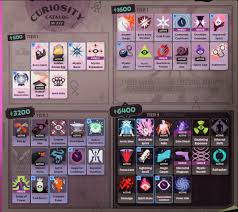

Deadlock são divididos em três categorias principais que fortalecem diferentes aspectos do seu herói e são comprados com Almas (Souls) ao longo da partida:
Categorias de Itens
- Arma (Weapon / Laranja): Aumenta o dano balístico, cadência de tiro, munição e efeitos de ataque básico.
- Vitalidade (Vitality / Verde): Concede vida máxima, regeneração, resistência a dano e estamina.
- Espírito (Spirit / Roxo): Potencializa o poder das habilidades, redução de recarga (cooldown) e efeitos mágicos/espirituais.
